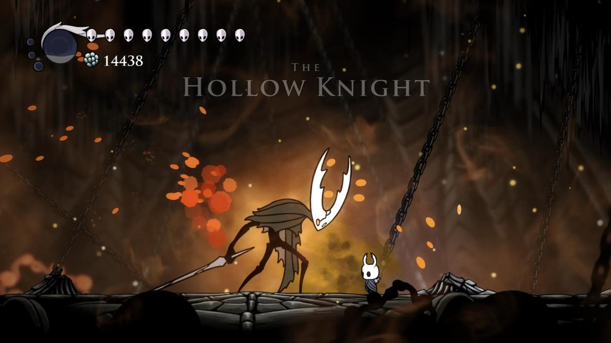

[Review] Hollow Knight, Sebuah Mahakarya Yang Sangat Kompleks!
 Hollow Knight adalah gim dengan genre Metroidvania. Maksudnya apa Nah artinya adalah gabungan dari dua judul gim legendaris Metroid dan Castlevania.
Umumnya genre ini disajikan secara Side-Scrolling dengan grafik 2D yang dibungkus dengan map yang luas dan saling terhubung. Untuk saat ini, yang fokus review redaksi kali ini adalah aspek-aspek dan elemen penting yang terdapat pada game ini.
Note: Game ini cukup menguji kesabaran kita sebagai pemain
Jika kita mati di dalam game ini kita akan di paksa kembali ke tempat terakhir kita save, jika kita lupa save dan lalu mati semua progres yang kita lakukan akan di mulai dari awal kita sebelum save
tapi tetap ini game bagus 8/10